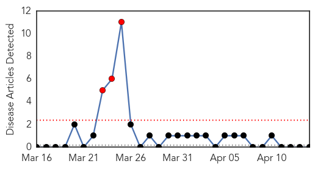

Unknown
30-Day Web Trend
0 alerts, 0 warnings
30-Day Twitter Trend
0 alerts, 0 warnings

Article Locations

Article Confidences

Top Articles:
- 1.000
- Deadly Virus Surges Through Gulf States
- 1.000
- Deadly Virus Surges Through Arab Gulf
- 0.999
- One foreign health worker dies, five infected with MERS in UAE
- 0.996
- MERS Causes One More Death-1st in UAE after 2 Deaths in Saudi Arabia
- 0.962
- Avian flu unlikely to sicken humans
- 0.960
- Deadly MERS virus outbreak sends alarm bells ringing in Mideast
- 0.941
- USDA seen considering mandatory reports of PEDv outbreaks
- 0.917
- Chicago Tribune
- 0.917
- Chicago Tribune
- 0.917
- Chicago Tribune
- 0.917
- Chicago Tribune
- 0.917
- Chicago Tribune
- 0.917
- Chicago Tribune
- 0.917
- Chicago Tribune
- 0.917
- Chicago Tribune
- 0.917
- Chicago Tribune
- 0.916
- Authorities fail to contain Leishmaniasis in Mardan
- 0.914
- MERS kills another expat in Jeddah
- 0.901
- Mosquito disease health alert
- 0.887
- UN agency urges countries to boost action against banana disease
- 0.884
- MERS takes foreigner's lifeHealthcare
- 0.871
- Baby pigs susceptible to serious virus
- 0.870
- Germs' DNA decoded to fight food poisoning Republican American
- 0.869
- USDA considers mandatory reports of deadly pig virus outbreaks: industry group
- 0.869
- USDA considers mandatory reports of deadly pig virus outbreaks: industry group
- 0.866
- Obama to call Putin, not considering lethal aid for Ukraine
- 0.866
- France's Hollande ready to use "firm" sanctions in Ukraine crisis
- 0.866
- Russia's Putin is concerned about Ukraine situation-Kremlin
- 0.866
- Romanian president says new warship to come to Black Sea
- 0.866
- The new Solar Impulse 2 aircraft is pulled out of its base for tests in Payerne
- 0.866
- Quake measuring 6.1 magnitude strikes off Solomon Islands
- 0.866
- Beware of destructive banana disease
- 0.864
- News Article: FAO urges countries to step up action against destructive banana disease
- 0.864
- FAO urges countries to step up action against destructive banana disease
- 0.746
- Disease threatens world’s bananas, warns UN
- 0.743
- Drought worsens food crisis in poverty-stricken Haiti
- 0.668
- Japan Orders Chicken Cull after Bird Flu Outbreak in South — Naharnet
- 0.666
- Sufferer calls for recognition of Lyme disease
- 0.655
- 16th Congress of the Philippines
- 0.652
- UNV Medical Officer provides quality health care within UNMISS civilian protection site in Malakal - An in-depth interview with Dr. Meroni Abraham - South Sudan
- 0.621
- Cervical cancer vaccine too costly, say experts - Business News
- 0.612
- Indiana officials address virus striking young pigs
- 0.608
- The Royal Gazette:Bermuda News
- 0.606
- Bird flu infection sounds alarm in Japan
- 0.606
- Disease threatens world’s bananas—UN
- 0.605
- Japan culls chickens after bird flu outbreak
- 0.593
- Disease threatens world's bananas: UN
- 0.591
- Contaminated feed most likely source of Ontario PED outbreak – mySteinbach News
- 0.524
- Preparedness of Tanzanian health facilities for outpatient primary care of hypertension and diabetes: a cross-sectional survey
- 0.511
- Disease threatens world’s bananas
Showing top 50 articles...
Top Tweets:
- 0.693
- Stomach flu is not the flu. Flu is not a stomach/intestinal disease. It's a respiratory disease. via http://t.co/sgClMaTpa8
- 0.523
- 25 de abril es Dia Mundial de la Malaria porque las Américas el sudeste de Asia y el Oriente Medio también tienen malaria defeatmalaria
Hemmorhagic Fever
30-Day Web Trend
3 alerts, 0 warnings

30-Day Twitter Trend
1 alerts, 0 warnings
Article Locations

Article Confidences

Top Articles:
-
No articles found for Apr 14, 2014
Top Tweets:
-
No tweets found for Apr 14, 2014